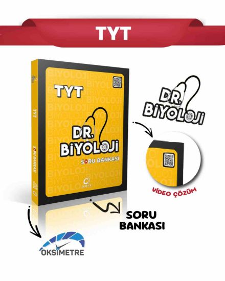
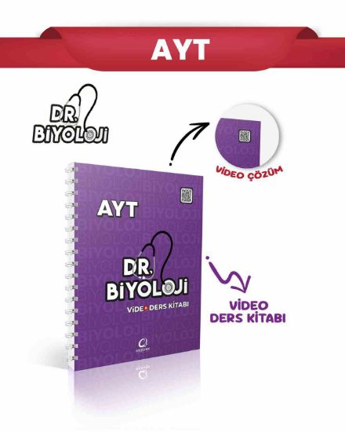
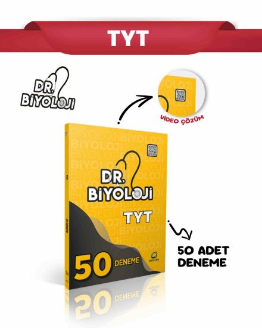
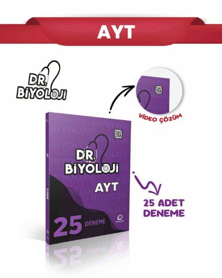

YKS KİTAPLARIM
Daha Fazla...OKSİJEN YAYINLARI TYT DR BİYOLOJİ VİDEO DERS KİTABI
İncele

OKSİJEN YAYINLARI TYT DR BİYOLOJİ SORU BANKASİ
İncele

OKSİJEN YAYINLARI AYT DR BİYOLOJİ VİDEO DERS KİTABI
İncele
OKSİJEN YAYINLARI AYT DR BİYOLOJİ SORU BANKASI
İncele

OKSİJEN YAYINLARI TYT DR BİYOLOJİ 50'Lİ DENEME
İncele

OKSİJEN YAYINLARI AYT DR BİYOLOJİ 25'Lİ DENEME
İncele